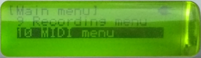
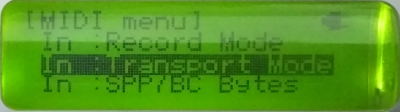
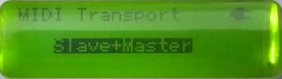
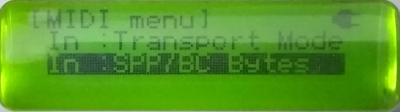
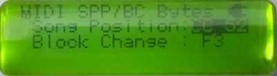
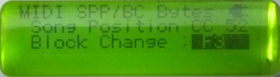

MIDI Transport Controls
This page discusses the TNR’s baseline MIDI transport implementation, and some extensions.
Transport controls here cover the following messages
- MIDI Start (0xFA)
- MIDI Continue (0xFB)
- MIDI Stop (0xFC)
- MIDI Song Position Pointer (0xF2)
- MIDI Block Change message
Behavior of Stock Firmware (v2.10)
The standard response to the MIDI transport controls is largely compliant to the MIDI specification.
Firstly, the messages that the TNR actually responds to, in slave or master mode, when the TNR is stopped or playing, is compliant. Here “Yes” means something happens, and “No” means nothing happens.
| Message | Slave | Master | |||
|---|---|---|---|---|---|
| Name | Byte | Playing | Stopped | Playing | Stopped |
| Start | 0xFA | No | Yes2 | No | No |
| Continue | 0xFB | No | Yes | No | No |
| Stop | 0xFC | Yes | No | No | No |
| Song Position Pointer1 | 0xF2 | No | Yes | No | No |
1: Song position pointer is interpreted as the playing position within the current block, not as a block change. The response to a SPP message of F2 0Y 00 is to set the playing position to Y. The last, MSByte, is ignored, which is always strange since this would have been a perfect vehicle for a block change byte.
2: The correct response to a “Start” message is to restart with song position 0, i.e. at the start of the block. However the TNR just treats Start the same as Continue
ASIDE : in Master mode, the TNR will produce Stop messages when stopped, and produce Start (FA) messages when started. This is non compliant - it should produce Continue (FB) messages when started since it doesn't restart from song position zero.
Behavior of New Firmware (releases since A025)
Several new features have been added to manage MIDI transport, allowing the TNR to become more non-compliant to the specification, but enabling better integration with DAWs and other MIDI transport aware hardware.
MIDI Menu
A new top-level MIDI menu has been created to manage global MIDI settings.

MIDI Transport selection
The response to any MIDI transport command can be now toggled between
- “Off” : The TNR does not respond to ANY incoming transport MIDI messages. This includes FA/FB/FC. This is included to prevent the TNR responding to transport commands intended for other sequencers on the same MIDI bus.
- “Slave” : The TNR only responds to incoming transport MIDI messages in Slave syncrhonisation mode. (This is the stock TNR behaviour)
- “Master+Slave” : The TNR responds to incoming transport MIDI messages in both Master and Slave syncrhonisation mode. This allows external stop/start control of the TNR while still using the TNR as the source of clock messages. In this mode the TNR also generates a start/stop message (i.e. applies MIDI Thru to these messages).
  Selection of Song Position Pointer Message Byte
Not all sources can generate F3 song position pointer messages, so this option permits Control Change messages to be used instead, using any of CC 52-63 (usually undefined). Receipt of one of these CC messages on any midi channel is interpeted as a Song Position pointer. The encoding is the same as the LSByte of the SPP message, i.e. for CC 52 (0x34) this would now be be
B0 34 0Yinstead ofF3 0Y 00  Selection of Block Change Message Byte
The block change message (See Block Change) can be changed from
F3to a CC message between 20-31. Song Position Pointer and Block Change messages work while playing
Provided that SPP and BC messages are being listened to - i.e. Transport Mode is not Off and SPP and BC bytes are not OFF - then this feature means that the TNR will respond even when playing. (This was originally not allowed in the MIDI Specification because processing SPP messages could cause the synth to stutter and miss F8 clock messages, ending up out-of-time).
Selectable Compliant FA/FB behavior in MASTER mode
When in Master mode, pressing “Start” on the TNR by default issues ‘FA’ (Start). An additional menu item has been added under the MIDI menu to allow the MIDI Start byte to be “dynamic”. In this mode, if the song position is at the start, then
FA(Start) is issued, otherwiseFB(Continue). Normally the latter will be the case since it always restarts from where it left off, i.e with SPP not equal to zero.Compliant behaviour in SLAVE mode
In slave mode, receiving
FAStart messages will result in the song position pointer going to zero and then starting. Both these behaviors are compliant to the MIDI specification.
Together, this changes the table as follows:
| Message | Slave (assuming MIDI Transport is not set to "OFF") | Master (assuming MIDI Transport is set to "Master+Slave") | |||
|---|---|---|---|---|---|
| Name | Byte | Playing | Stopped | Playing | Stopped |
| Start | 0xFA | No | Yes1 | No | Yes1 |
| Continue | 0xFB | No | Yes | No | Yes |
| Stop | 0xFC | Yes | No | Yes | No |
| Song Position Pointer | 0xF2, or 0xBn 34-3F | Yes | Yes | Yes | Yes |
| Block Change Message | 0xF3, or 0xBn 14-1F | Yes | Yes | Yes | Yes |
1: Receipt of the MIDI “Start” message also sets the Song position pointer to zero.
Compatibility Issues
Previous settings files (including default) will default to the following setup:
- MIDI Transport selection = Off
- Song Position Pointer Byte = Off
- Block Change Message Byte = Off
Releases
First included in A023; start message made MIDI compliant in A028